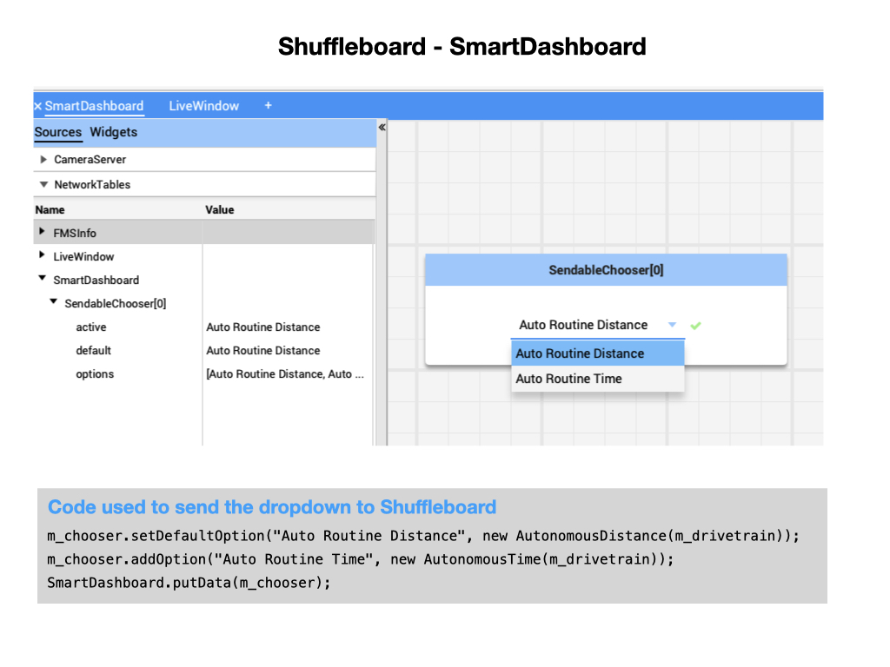

FRC Testing Environment
This section explains the testing environment that we’ll be using for the programming tutorials.
Important
TODO Graphic for Test Environment
Hardware Platforms
We’ll be using multiple hardware platforms for our training. During training we are likely to make some mistakes so we need a platform that will not cause any damage, for this we will be using your laptop and Simulation . Once we feel comfortable with our code, we will move onto testing individual motors with the Sweet Bench. Then we will move onto the Programming Robot to test out your code on a real robot and then finally we move onto the Practice Robot that is very similar to the one used in competition.
Software Development IDE and the WPI Plugin
In order to develop programs for the robot, you have to use an Integrated Development Environment (IDE). An IDE is a piece of software that is used to make writing code easier. Visual Studio Code (VS Code) is the supported IDE for programming an FRC robot.
Note
If you don’t have VSCode installed on your computer refer to VSCode and WPILib Install section.
As part of the VS Code install, the WPILib Robotics Library (WPILib) is also installed. This is the standard software library provided for teams to write code for thier FRC robot. The install process will also install a plugin into VS Code for WPILib. This Plugin allows you to execute WPILib features from within VS Code. For example, you can use the WPILib plugin to Build Robot Code, Simulate Robot Code, or Deploy Code to Robot.
Robot Simulator
Simulating how the robot will perform is done via the WPILib Simulation. We’ll learn a lot more about the Robot Simulator shortly.

Important
You’ll need to make sure that desktop support is enabled to use the Simulator. This is normally done when you first create your project although it can also be enabled later.
Shuffleboard
The Shuffleboard is a dashboard that allows you to interact with a robot and display data that is being generated by that robot. This capability is called Telemetry.
To learn more about the Shuffleboard, please use this link
Advantage Scope
Advantage Scope is a robot diagnostics, log review/analysis, and data visualization application for FIRST Robotics Competition teams. It reads logs in WPILOG, DS log, and RLOG file formats, plus live robot data viewing using NT4 or RLOG streaming. Here’s the online documentation of AdvantageScope.

Advantage Scope can also be used while you are simulating robot code. It connects directly with the simulator and can provide a representation of the competition field and the location of your simulated robot on that field in both 2D and 3D views. It will help a lot in your testing. We will learn more about Advantage Scope shortly.
Note
To install Advantage Scope go to the releases page and download the package for you operation system.
References
FRC Documentation Shuffleboard <https://docs.wpilib.org/en/stable/docs/software/wpilib-tools/shuffleboard/index.html>
FRC Documentation WPILib Simulation <https://docs.wpilib.org/en/latest/docs/software/wpilib-tools/robot-simulation/index.html>